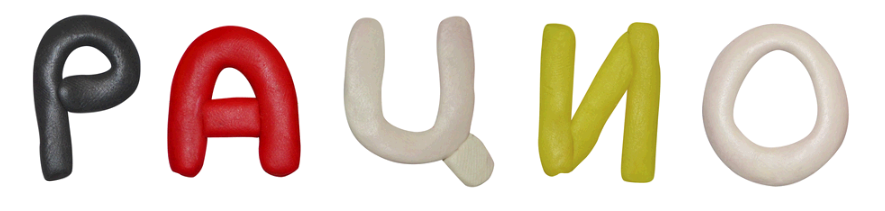

Игры без компьютера
Как создавать ребусы
В первую очередь, выберите слово или фразу, которую предстоит зашифровать. Запишите ее на листе бумаги без пробелов и знаков препинания
Прочитайте несколько раз написанное слева направо, а затем в обратном порядке. Старайтесь отыскивать знакомые слова, состоящие из 2-5 букв. Обратите внимание на возможные совпадения слов с названиями нот.
Далее, отметьте в исходном слове фрагменты, совпадающие с предлогами "на", "над", "под", "в", "за", "перед", "с", "и", "у", "при", "к", "от", "из", "по". Обратите внимание на возможность использования в ребусе букв стоящий как по разные стороны от предлога, так и по одну. Также отметьте фрагменты, совпадающие со словами "пара", "пол" и "треть".
Далее вам предстоит перейти к поиску слов, входящих в заданную фразу частично. Для этого несколько раз перечитайте задание слева направо и в обратном порядке отдельными блоками по 2-3 буквы подряд и старайтесь подобрать слова, начинающиеся или заканчивающиеся на эти буквы. Делайте выноски и отмечайте запятыми, какое количество букв в новых словах необходимо отбросить. Учтите, что в любом слове может быть «выкинуто» не более половины букв.
Наконец, последовательность букв исходного текста, которая осталась неотмеченной, можно попробовать заменить изображениями, содержащими такие буквы в произвольном порядке. В таком случае у соответствующей выноски с изображением, пишут номера использованных букв (например, цифры 7,4,3,9 у изображения Чебурашки обозначают слово "шуба"). Чтобы создать действительно хороший ребус, таких элементов, как этот, можно использовать не более двух.
Удачным можно считать ребус, в котором присутствуют изображения близкие по смыслу и характеру с исходным словом или фразой. При составлении ребуса обязательно учитывайте специфику целевой аудитории. Детский ребус, например, не должен содержать сложных для понимания изображений, не соответствующих возрасту.
